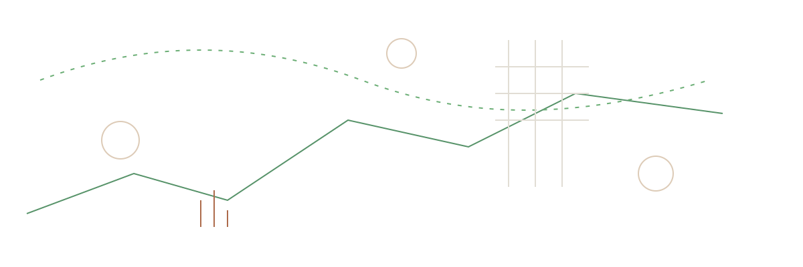
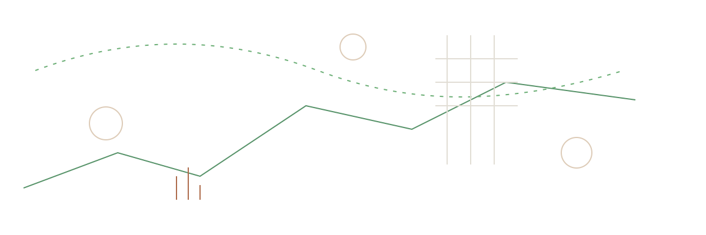
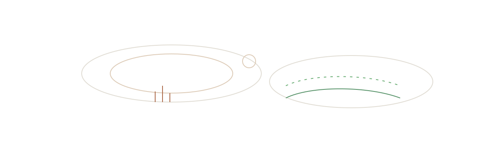
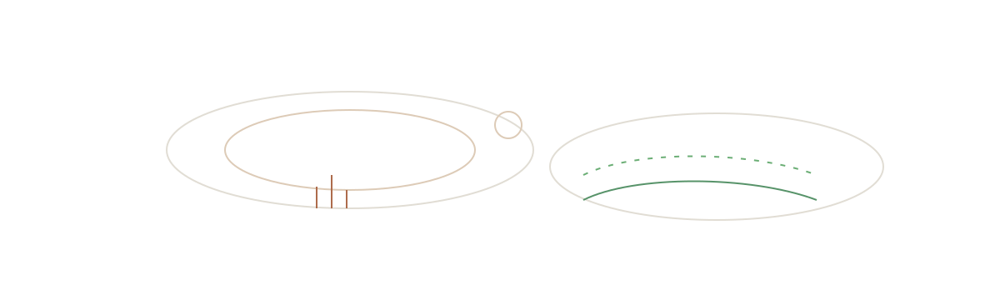

Strategic Finance & Risk Management for Growth‑Driven Companies.
Fractional CFO services, financial modeling, and tech‑enabled risk solutions to help your business thrive.
 

About
Luis Eduardo Maass is a fractional CFO and risk management expert with a track record scaling growth at Rutopía and advising startups, family businesses, and corporates. His domain spans tourism finance, technology‑enabled operations, and strategic corporate advisory.
 

Services
Fractional CFO Services
Cash flow, forecasting, budgets, and investor‑ready reporting.
Risk Management & Hedging
FX exposure, pricing strategies, and downside protection.
Financial Modeling & Valuation
Robust models, scenario design, and decision analysis.
Tech‑Integrated Finance
Data pipelines, automations, and AI‑assisted workflows.
Experience & Track Record
- Rutopía — Fractional CFO: scaled revenue from $0.5M to $5M, margins +10%.
- AHAL Financial — Founder: CFO‑as‑a‑Service; modeling, valuations, and risk frameworks.
- Corporate Advisory — KPI stacks, board reporting, finance transformations.
Logos here
EDUARDO MAASS
Let’s discuss your next growth move
Book a 30‑minute consultation to map the quickest, safest path to your next milestone.